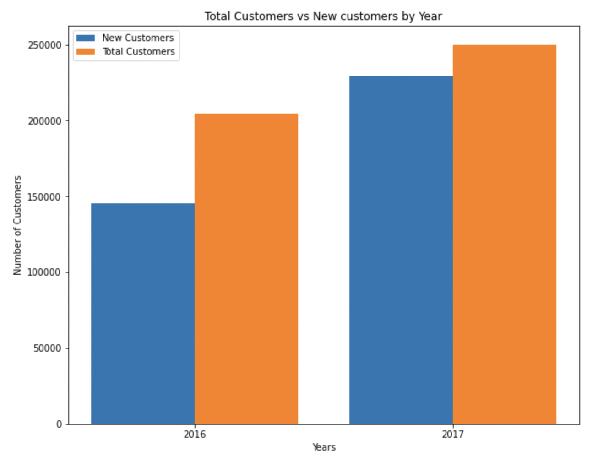

Results:
The results for the given questions are below:
- Total revenue for the current year: 31417495
- New Customer Revenue 2015-2016: 18245491
- New Customer Revenue 2016-2017: 28776235
- Existing Customer Growth 2015-2016:
- Existing Customer Growth 2016-2017:
- Revenue lost from attrition 2017: 20611
- Revenue lost from attrition 2016: 20335
- Existing Customer Revenue Current Year - 2017: 2641259.99
- Existing Customer Revenue Prior Year - 2016: 2620648.65
- Total Customers Current Year - 2017: 249987
- Total Customers Previous Year - 2016: 204646
- New Customer 2016-2017: 229028
- New Customer 2015-2016: 145062
- Lost Customers 2016-2017: 183687
- Lost Customers 2015-2016: 171710
Let us anlayse the dataset first:
- We observe that there are 3 columns with customer email, net revenue and year
- There are three years 2015, 2016 and 2017 and associated customer orders and email id
- Some customers purchase products all three years and their combined order for each year is given as separate data points
Let us anlayse the dataset to see if there are any patterns:
We plot the total revenues for the three years as a pie chart and see that 2017 has the highest revenue
In this plot, we can see that new customers occupy most of the total customer base and the value seems to grow every year

Accordingly new customers also bring in the most revenue
We plot the existing customer revenue along with the total. This value is considerably lesser
Expanding upon the existing customer revenue, we see that the total revenue from customers who have purchased products for three years consecutively is almost the same
We can also see that the total net revenue of products purchased by customers is also the same every year
We plot the growth over years to see if existing customers purchase more or less products every year. Overall our dataset is Uniformly distributed which can be seen as a result of our plots